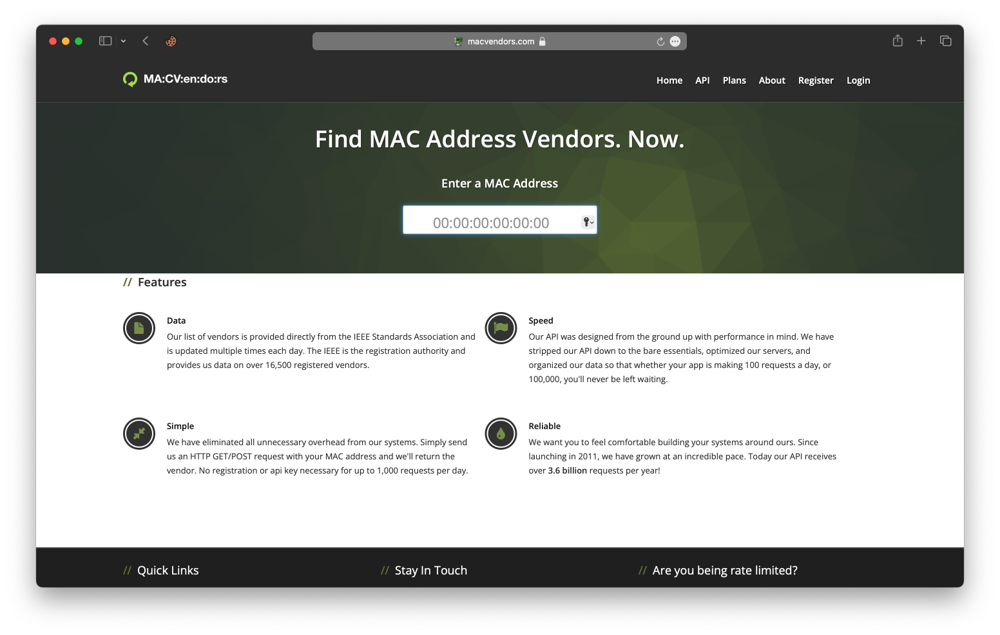
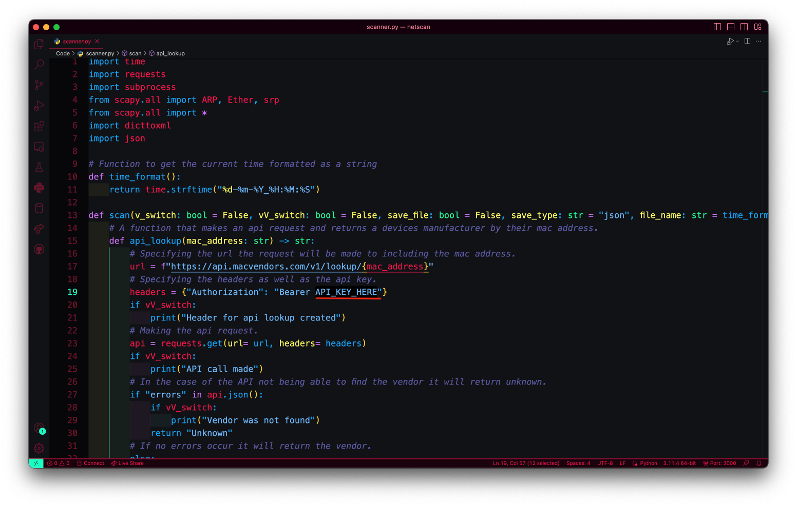

Welcome to Netscan. This tool is designed to help you scan networks and identify devices. With a metasploit like feel to make it easier than ever to gain knowledge of the structure of a network.
Project Details
This project is hosted on GitHub. For more details, please visit the Netscan GitHub repository.
Contributions, issues, and feature requests are welcome! Feel free to check the repository for the latest updates and to participate in the development.
Available Commands
- scan - Initiate a network scan to discover devices.
- results - Display the results of the network scan.
- sniff - Sniff packets in the network.
- qscan - Do a quick scan returning all hosts that are up and down in a network.
- help - Display help information about commands or general usage.
- exit - Exit the program.
Setup
Step 1:
Navigate to the Netscan folder.
Step 2:
Navigate to the Netscan folder.
Step 3:
Install the requirements.
Step 4:
Get an API key from macvendors.com
Step 5:
Set the api key in the scanner.py file
user@localhost# git clone https://github.com/dxmxtrxs/netscan.git
user@localhost# cd /directory/of/netscan
user@localhost# pip3 install scapy requests dicttoxml


How to use
Step 1:
Start the script.
Step 2:
Start digging!
user@localhost# sudo python3 netscan.py
netscan> command
Notes
- The script is stable on macOS it hasnt been tested in other operating systems yet.